Demon Slayer: Kimetsu no Yaiba is one of the best-researched anime ever made. Its author, Koyoharu Gotouge, did not invent a fantasy Japan from scratch — she assembled one from real places, real history, and real folklore, then stitched them together into the Taisho era (1912–1926), a fourteen-year window when ancient mountain mythology and electric streetlights coexisted in the same city block. The world feels real because, in nearly every important detail, it is.
This is the complete pilgrimage guide. Not a list of vague inspirations, but a precise map of ten locations across Japan — from a Fukushima ryokan whose lobby is architecturally indistinguishable from the Infinity Castle, to a mountain shrine in Fukuoka where monks have worn Tanjiro's checkered haori pattern for centuries. Each location is documented with its anime connection, its real-world address, what to expect when you arrive, and exactly where to stay nearby.
The scale of this pilgrimage is vast. Demon Slayer draws from Tohoku and Kyushu, from Tokyo's western mountains and Kyoto's railway museums, from Yamagata's frozen onsen towns and Nara's mythological forests. A single trip cannot cover all of it. But knowing the full map is the first step — and the map, as it turns out, is Japan itself.
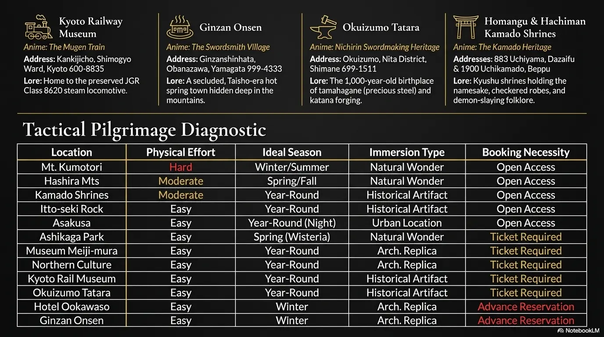
The complete Demon Slayer pilgrimage diagnostic — effort level, ideal season, and booking requirements for all 12 sacred sites
The Pilgrimage Map — 12 Sacred Sites
- Mt. Kumotori, Tokyo — Tanjiro's Home / The Snowy Origins
- Hashira Mountains, West Tokyo — The Warriors' Origins
- Kamado Shrines, Fukuoka & Oita — The Kamado Name & Hinokami Kagura
- Itto-seki Rock, Nara — Tanjiro's Training Boulder
- Asakusa Nakamise, Tokyo — Muzan Encounter / Taisho Tokyo
- Ashikaga Flower Park, Tochigi — Mt. Fujikasane / Final Selection
- Museum Meiji-mura, Aichi — Butterfly Mansion
- Northern Culture Museum, Niigata — Ubuyashiki Estate / Hashira HQ
- Kyoto Railway Museum — The Mugen Train
- Okuizumo Tatara Sword Museum, Shimane — Nichirin Blade Heritage
- Ookawa-so Ryokan, Fukushima — The Infinity Castle
- Ginzan Onsen, Yamagata — The Swordsmith Village
Mt. Kumotori: Where Tanjiro Was Born
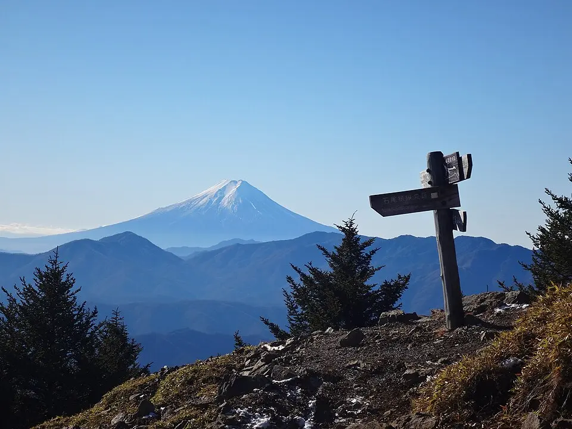
At 2,017 meters, Mt. Kumotori is Tokyo's highest peak — though it straddles three prefectures: Tokyo, Saitama, and Yamanashi. Its name translates literally as "cloud catcher," and in winter, when snow closes the upper trails and visibility drops to nothing, it earns the name completely. This is the landscape that produced Tanjiro Kamado: a charcoal burner's son from an isolated alpine community, walking hours through snow to sell coal in the valley below.
The mountain is the officially acknowledged geographic origin of the Kamado family. The upper slopes still contain traces of Taisho-era charcoal burner trails — narrow paths worn into the rock by generations of workers making the exact journey Tanjiro makes at the story's opening. Standing at the summit in winter, with the Kanto Plain invisible somewhere far below the cloud layer, the physical isolation that shapes Tanjiro's character makes complete sense. This is not a place that produces soft people.
The 6-to-7 hour intermediate hike from Okutama Station is the standard approach. The route passes through dense cedar and beech forest before breaking above treeline near the summit. The Taishido site — a historical location for local Kagura (Shinto theatrical dance) performances — sits at a mid-mountain plateau and is the real-world anchor for the fictional Hinokami Kagura ritual that Tanjiro's father performs each New Year's Eve. The mountain also brackets two other Hashira birthplace peaks: Mt. Otake (Inosuke's wild, boar-inhabited territory) and Mt. Hinode (Gyomei's panoramic stone training ground).
Where to Stay
Mt. Kumotori is a day trip or overnight hike from Tokyo. The mountain itself offers basic summit huts. For a comfortable urban base before the hike: any of HotelManga's Tokyo hotels are well-positioned for an early morning Chuo/Ome Line departure. The hike trailhead at Okutama is approximately 2 hours from Shinjuku by train.
The Hashira Mountains: Where the Warriors Were Born
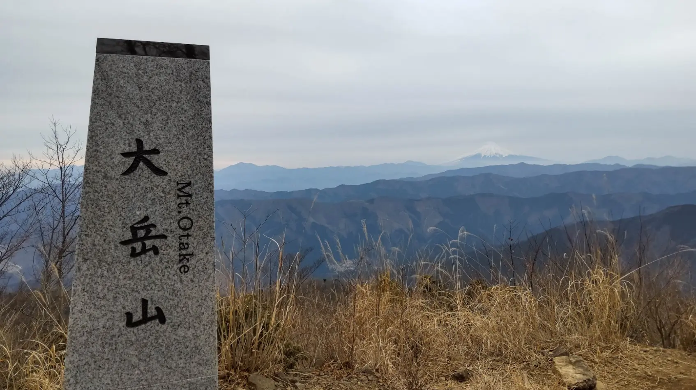
The nine Hashira — the Demon Slayer Corps' most powerful warriors — did not emerge from nowhere. Each came from somewhere specific, and those somewheres are real mountains in western Tokyo's Nishitama District, clustered around the same alpine zone that produced Tanjiro himself. Mt. Kumotori anchors the center; the Hashira birthplace peaks bracket it on all sides, each with its own character and its own connection to its warrior.
Mt. Otake (1,266 meters) is Inosuke Hashibira's mountain — the peak that shaped the boy raised by boars in the wild. A rugged, shrouded summit reached by gondola from Mitake, it sits to the east of Kumotori with forested ridges and the kind of tangled, overgrown terrain that suggests a childhood spent navigating by instinct rather than trail. The gondola rises steeply through cedar and beech, and at the top the views open over Okutama's river valleys in a way that feels genuinely untamed even in the present century.
Mt. Hinode (902 meters) belongs to Gyomei Himejima, the Stone Hashira — the largest and physically most formidable of the nine, a Buddhist monk whose power is expressed through prayer beads rather than conventional weapons. Hinode's summit offers a sweeping view of the Kanto Plain below, the kind of panorama that grounds a character whose fighting style is defined by stillness and mass rather than speed. The Tsurutsuru Onsen near the base provides post-hike recovery in waters that have served this mountain community for centuries.
Mt. Kagenobu (727 meters) in Hachioji is the origin point for Muichiro Tokito, the Mist Hashira — the youngest of the nine, amnesia-stricken, separated from his twin, his power expressed through fog and confusion. Kagenobu is a seasonal hike famous not for dramatic scenery but for the wild vegetable tempura served at the summit teahouse: mountain fiddleheads, fresh-picked bracken, the taste of the specific altitude. The mist that gives Muichiro his breathing style title is most present in the valleys below Kagenobu on spring and autumn mornings.
Where to Stay
All Hashira Mountains are day hikes from Tokyo. Any of HotelManga's Tokyo hotels — particularly those in Shinjuku or Akihabara — are well-positioned for early Ome Line departures. For those combining multiple peaks in one trip, small guesthouses in Okutama village (Okutama Station, JR Ome Line terminus) are the logical overnight base.
The Kamado Shrines: Where the Name Comes From
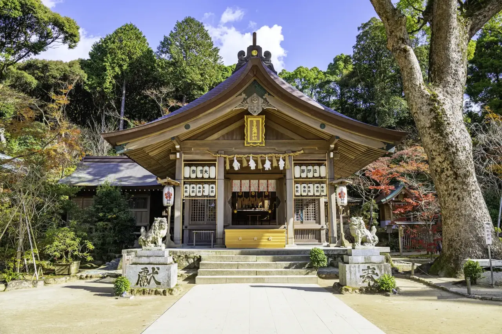
Japan has several shrines named Kamado, and the coincidence is not accidental. The word "kamado" means hearth or cooking stove, and shrines bearing this name have historically served as spiritual defenses against demonic forces entering from the north and east — the "Demon Gate" directions in Japanese geomancy. Koyoharu Gotouge almost certainly knew exactly what she was doing when she named her demon-slaying family after the hearth.
The most significant is Homangu Kamado Shrine in Dazaifu, Fukuoka. Built on Mt. Homan specifically to defend Dazaifu's Kimon — its Demon Gate — the shrine has been a center of yamabushi mountain monk training for centuries. The extraordinary detail: these monks have historically trained in green-and-black checkered garments nearly identical to Tanjiro's iconic haori. The pattern is not a fashion choice in the anime; it is a literal piece of mountain religious practice from this exact region of Japan.
In Oita, Hachiman Kamado Shrine in Beppu holds a legend about a man-eating demon who was forced to build 100 stone steps in a single night before sunrise — the demon failed at 99, producing the shrine's famous 99-step approach. The shrine hosts the Kamado Kagura dance on New Year's Eve, a ritual fire performance that flawlessly mirrors the Hinokami Kagura breathing technique that Tanjiro inherits from his father. Watching it performed in person — the dancers circling a bonfire in checkered robes at midnight — is one of the stranger and more affecting anime pilgrimage experiences available in Japan.
A third Kamado Shrine exists in Nagano, built to protect the northeast flank of the Nishina family and specifically designed to ward off demonic entities entering through the Demon Gate. It shares the exact namesake of the anime's protagonists and was constructed for the same spiritual purpose: keeping demons out.
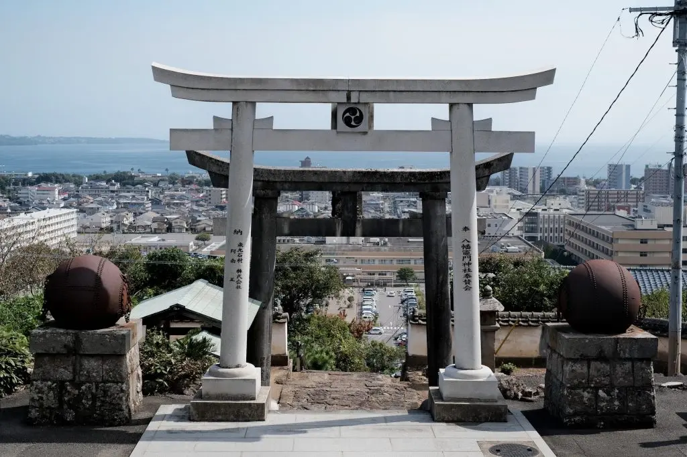
The Kamado Kagura performed at Hachiman Kamado Shrine, Beppu — the real-world Hinokami Kagura
Where to Stay — Fukuoka / Dazaifu
Hotel Cultia Dazaifu — A boutique hotel in a carefully restored traditional building, steps from Dazaifu Tenmangu Shrine and the access route to Homangu Kamado. For pilgrims who want the traditional atmosphere of the shrine town rather than Fukuoka's business district.
Kaikatsu CLUB 3 Gofutsukaichiten — A manga cafe with accommodation in Futsukaichi, directly adjacent to Homangu Kamado Shrine. The most budget-appropriate option for an otaku traveler hitting the shrine and moving on the same day. Since this cafe does not offer online reservations, you must visit in person. However, before heading over, you can check room availability via this link.
Kaikatsu CLUB 3Itto-seki Rock: The Boulder That Was Cut
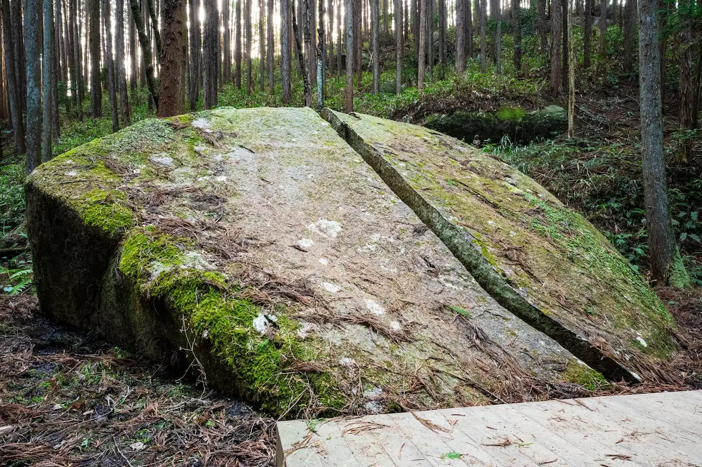
In Yagyu Village, a remote hamlet in the hills east of Nara City, there is a 7-meter-long granite boulder that has been cleanly split down its center. Not cracked. Not fractured by earthquake. Split — with a flat, precise face on each half that suggests a single catastrophic strike rather than geological pressure. The local legend is explicit: master swordsman Yagyu Munetoshi cleaved this rock in half while dueling a mythical Tengu, a mountain goblin. The split rock is called Itto-seki — One-Sword Stone.
The connection to Demon Slayer is the boulder-cutting scene: Tanjiro's ultimate training test under his master Sakonji Urokodaki requires him to slice a massive boulder cleanly in half with a single strike. The visual parallels are exact. And the mask worn by Urokodaki — a Tengu mask — directly references the same mountain goblin tradition that the Itto-seki legend invokes. The boulder and the mask come from the same mythological system.
Yagyu Village itself is one of the more affecting places in Nara Prefecture — a quiet agricultural hamlet surrounded by cedar forest, its main street lined with stone lanterns from the Yagyu clan's centuries of martial prominence. The Yagyu were one of the most influential sword schools in feudal Japan, official instructors to the Tokugawa shogunate, and the physical landscape of the village — its stone paths, forest shrines, and sword memorial sites — still carries that weight.
Where to Stay — Nara
Nara Hotel — Opened in 1909, this is a Meiji-era grand hotel that has barely changed since Taisho times. The wooden corridors, high ceilings, and garden views make it the most atmospheric accommodation for a Demon Slayer pilgrimage in this region — the building itself is the era. Located 15 minutes from Nara Station, 40 minutes from Yagyu Village by car.
Kasagi — For pilgrims who want to be closer to Itto-seki, the small village of Kasagi (approximately 20 minutes from Yagyu by car) has several traditional minshuku and small ryokan with authentic rural atmosphere. Ask locally for availability as most do not list online.
Asakusa Nakamise: Where Tanjiro Met Muzan
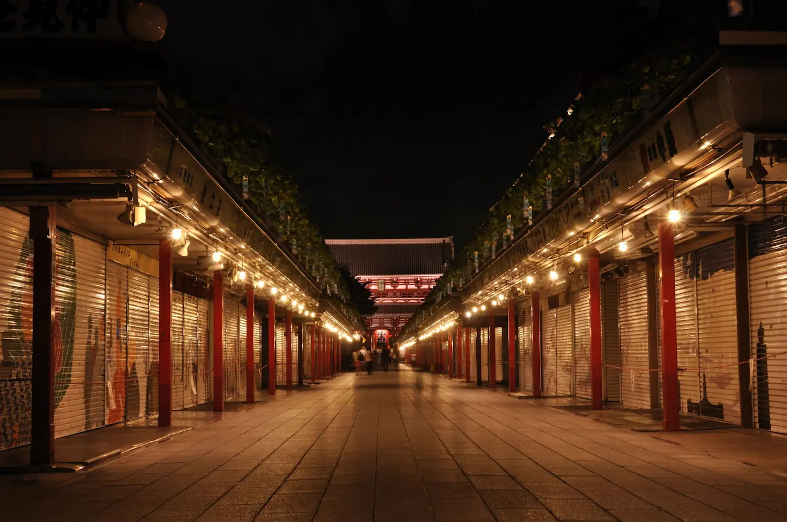
Tanjiro's first entry into a modern city is one of the great disorientation sequences in Demon Slayer. The boy from an isolated mountain community encounters electric lights for the first time, towering brick buildings, crowds of strangers in Western clothes, a city that does not know night. He walks Nakamise Street toward Senso-ji Temple — the ancient shopping arcade leading to one of Tokyo's oldest Buddhist sites — and in the middle of this overwhelming modernity, bumps into a man in a black hat and Western suit who smells wrong. The man is Muzan Kibutsuji. The demon progenitor. The series' central antagonist. Their encounter here, among the lanterns and shopfronts of Asakusa, sets everything in motion.
The anime's depiction of Asakusa is rigorously historically accurate in one extraordinary detail: the famous Kaminarimon Gate, which today stands at the entrance to Nakamise and is one of the most photographed spots in Tokyo, is absent. This is not an oversight. The Kaminarimon burned down in 1865 and was not rebuilt until 1960. The anime, set in the Taisho era (1912–1926), correctly shows Nakamise Street without the gate — because the gate did not exist then. The level of research this represents is unusual even for meticulously produced anime.
Visiting Nakamise Street after 3:30 PM, when the tourist day crowds thin and the lanterns begin to glow, produces something close to the Taisho vibe that Gotouge depicts. The street itself — its proportions, its lantern arrangement, its relationship to the temple behind — has not fundamentally changed. The specific atmosphere of ancient ritual commerce running alongside electric modernity, which defines the Taisho aesthetic of Demon Slayer, still exists here in concentrated form.
Where to Stay — Tokyo / Asakusa
Manga Art Hotel Tokyo — 15 minutes from Nakamise Street by subway. 5,000+ curated manga volumes including a significant Demon Slayer collection. The natural next stop after walking Asakusa at dusk.
Ashikaga Flower Park: The Mountain of Final Selection
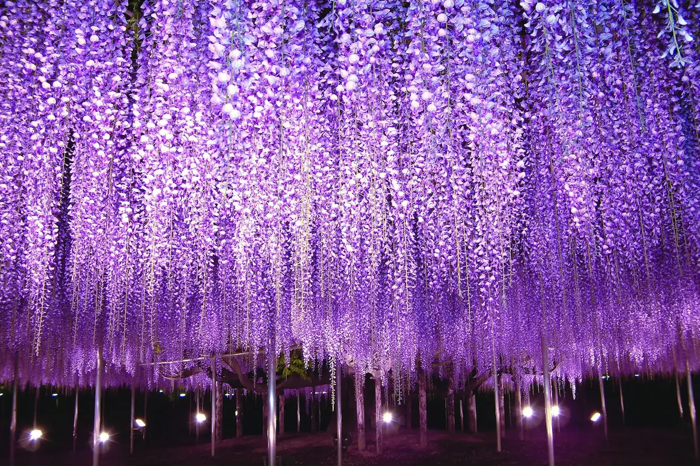
Ashikaga Flower Park in Tochigi Prefecture contains a wisteria tree that is 150 years old. Its canopy spans over 1,000 square meters. When it blooms in late April, the entire structure — a framework of steel supports built to hold the weight of the ancient branches — disappears beneath a ceiling of purple blossoms. In Demon Slayer, the poisonous wisteria flower (藤の花, fujikasane) is the one botanical substance that demons cannot endure; their blood itself is destroyed by its presence. The mountain of Final Selection, Mt. Fujikasane, is permanently blanketed in these flowers that bloom out of season, imprisoning the demons within a natural cage while young Demon Slayer candidates fight for survival inside.
The park uses over 5 million LED lights during winter nights to recreate the otherworldly bloom out of season — exactly as the anime depicts it. The lights illuminate the wisteria canopy from below in purple and blue, creating a glowing, almost bioluminescent atmosphere that could not be more faithful to the Final Selection sequences if the animators had designed it themselves. The cultural irony is deliberate: wisteria in traditional Japanese symbolism represents love, elegance, and longevity. Demon Slayer weaponizes it, transforming an emblem of grace into a lethal, poisonous deterrent. The subversion makes both the flower and the anime richer for it.
Where to Stay
Ashikaga Flower Park is best visited as a day trip from Tokyo. Any of HotelManga's Tokyo hotels serve as a comfortable base — the park is 90 minutes by car or approximately 100 minutes by train and taxi. For those who want to be on-site for early morning or late-night illumination visits, small business hotels in Ashikaga City (approximately 10 minutes from the park) are available via Booking.com.
Museum Meiji-mura: Inside the Butterfly Mansion
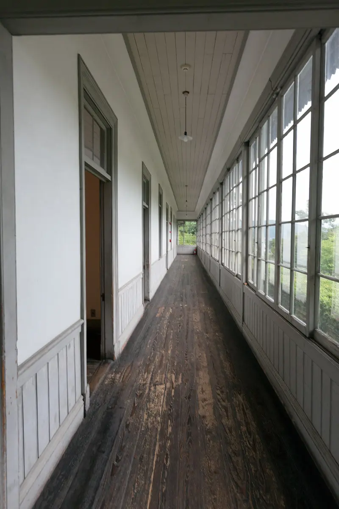
Museum Meiji-mura is one of Japan's great institutional achievements: an open-air architectural museum that has physically relocated over 60 significant Meiji and Taisho-era buildings from across Japan to a hillside site overlooking Lake Iruka in Aichi Prefecture. When a historic building faced demolition, Meiji-mura moved it here. The result is a walkable district of Japan's architectural past — Western-influenced brick buildings alongside traditional wooden structures, a genuine Taisho-era streetcar running between them, and visitors in period costume wandering the grounds.
The building that concerns Demon Slayer is the Japanese Red Cross Society Central Hospital ward. Its long wooden corridors, stark white walls, high ceilings, and hybrid Japanese-Western medical architecture — the structural grammar of an institution trying to operate both as a traditional Japanese space and a modern Western facility simultaneously — provided the direct architectural blueprint for the Butterfly Mansion, Shinobu Kocho's healing estate. The long white corridors where Tanjiro and Zenitsu recover from injuries; the light coming through wooden-framed windows at regular intervals; the quality of silence that a medical institution has even when occupied — all of it traces back to this building in Inuyama.
Walking the hospital ward corridor at Meiji-mura is a quiet experience. The building is well-preserved and largely empty of visitors on non-peak days. The light behavior inside — the way morning sun moves through the wooden window frames onto whitewashed walls — is precise enough that you can hold a screenshot from the anime beside you and map the correspondence panel by panel.
Where to Stay — Nagoya
Anshin Oyado Nagoya Sakae — 30 minutes from Meiji-mura by train. Onsen, sauna, free drinks, manga library, and 27-hour stay. The otaku base camp for central Japan.
Northern Culture Museum: The Hashira's Hall
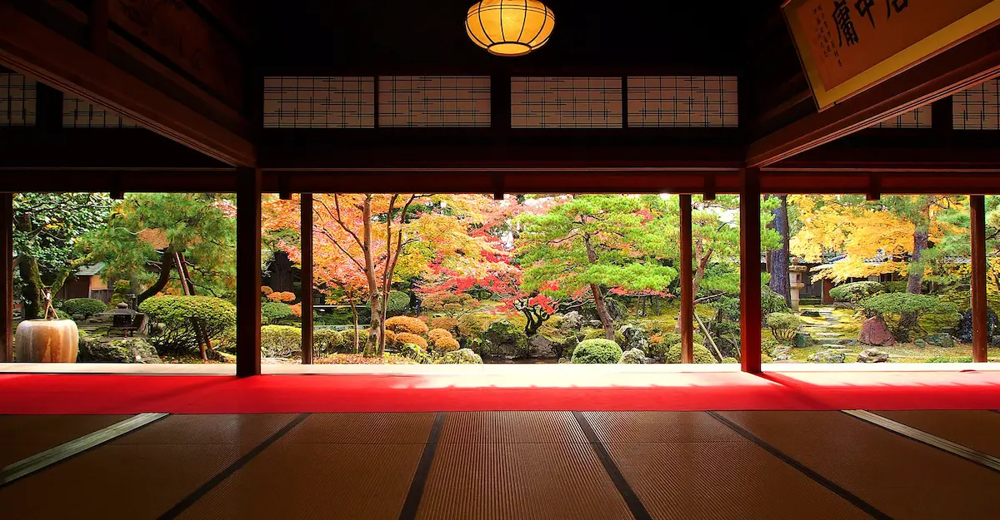
The Ubuyashiki Estate — the sprawling, impeccably maintained traditional mansion where the Demon Slayer Corps' nine Hashira hold their Pillar Meetings, coordinating the war against Muzan — required an architectural reference that embodied a very specific Taisho aesthetic. The philosophy is "less is more": immense rooms emptied of ornament, where the scale itself communicates authority. Where sliding shoji and fusuma doors open onto courtyard gardens maintained to a standard that communicates generations of resources and discipline. The estate represents the elite human organization standing against the demonic world, and its architecture must project exactly that.
The Northern Culture Museum in Konan Ward, Niigata, is one of the most remarkable preserved Taisho-era estates in Japan. The Ito family residence — the Ito family were Niigata's largest landowners, their agricultural wealth generating the resources to build and maintain what became one of Japan's great private architectural achievements — features a 100-tatami mat hall of staggering proportions. The room opens through a series of fusuma screens onto a garden of formal perfection: raked gravel, shaped pines, stone lanterns placed with the precision of a composition rather than decoration. The sheer scale of the space, combined with its deliberate emptiness and the garden view, produces exactly the hierarchical gravitas that the Ubuyashiki Estate requires.
Niigata also carries significant weight in the broader Demon Slayer universe's manga world: the city is the birthplace of Rumiko Takahashi (Inuyasha, Ranma ½), Takeshi Obata (Death Note, Bakuman), and ONE (One Punch Man, Mob Psycho 100). The Niigata Daiichi Hotel, with its 15,000-volume manga library, is the logical base for a pilgrimage that combines the Northern Culture Museum with the city's deeper manga credentials.
Where to Stay — Niigata
Niigata Daiichi Hotel — 15,000 manga volumes. Onsen. Yukata. Teppanyaki breakfast. The manga capital of Japan, 20 minutes from the Hashira's Hall.
Kyoto Railway Museum: The Mugen Train
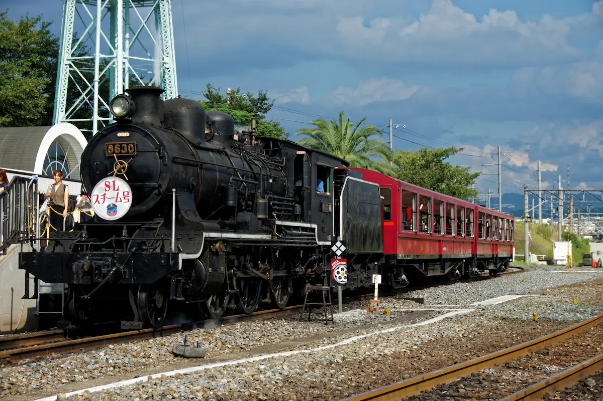
The Mugen Train arc is the highest-grossing anime film ever made. Its central object — the train itself, hijacked by a demon and converted into a living nightmare — is not a fantasy locomotive. It is a precise recreation of the JGR Class 8620 steam engine, the first mass-produced Mogul-type 2-6-0 locomotive in Japan, built from 1914 onward and the absolute technological peak of domestic Japanese engineering during the Taisho era. The Mugen Train looks the way it does because the Class 8620 looks the way it does: massive, black, the rhythmic violence of a steam engine at full throttle representing the industrial confidence of a modernizing nation.
Operational engine number 8630, built in 1914, is meticulously preserved at the Kyoto Railway Museum. Visitors can walk the length of the locomotive, climb into the cab, and stand inside the carriages that inspired the film. The museum also houses the SL Hitoyoshi locomotive — a Class 8620 that ran commemorative routes in Kyushu until recently, painted entirely black to match the pop-culture iconography of the Mugen Train. The parallel between the demon-corrupted locomotive of the anime and the real machine that represented Japan's industrial ambition is not accidental: the Taisho era's tension between modernity and the supernatural is the theme Demon Slayer is built on, and the Class 8620 is its physical embodiment.
Where to Stay — Kyoto
Hotel Tavinos Kyoto — A well-positioned design hotel in Kyoto, convenient for the Railway Museum and the wider city.
Okuizumo Tatara Sword Museum: The Soul of the Nichirin Blade
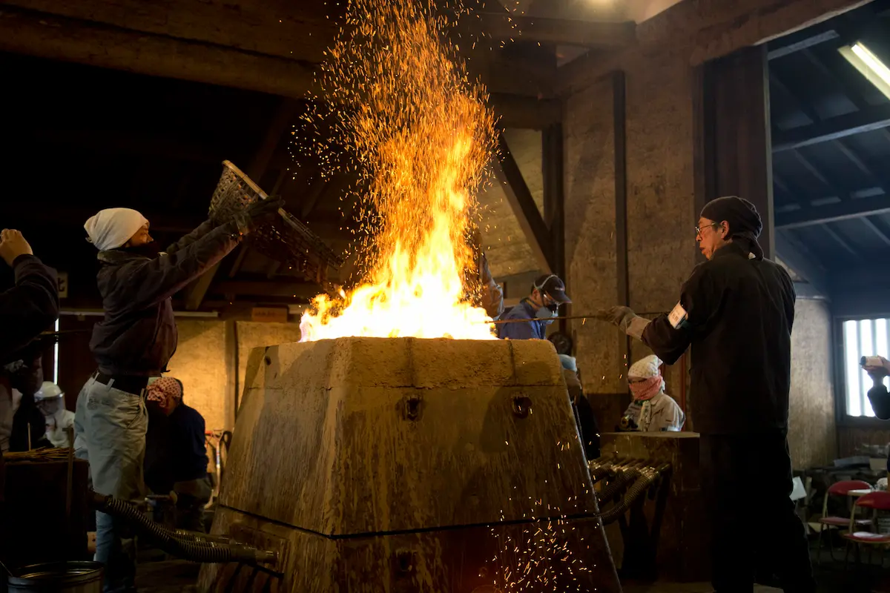
In Demon Slayer, the Nichirin blades — the only weapons capable of killing demons — are forged from a specific ore called Scarlet Crimson Iron Sand and Scarlet Crimson Ore, harvested from high-altitude mountains where sunlight is absorbed directly into the earth. The blades are made by masked swordsmiths in the Hidden Swordsmith Village, practitioners of an ancient craft so specialized that the blades change color to reflect the breathing style of their user. The forge is not a metaphor. It is based on a real process that has been practiced in this specific corner of Japan for over a thousand years.
Okuizumo, in Shimane Prefecture's mountain interior, is the historic heartland of tatara ironworking — the traditional Japanese method of smelting iron sand (satetsu) into tamahagane, the precious high-carbon steel that is the only material from which authentic katana can be made. The process takes days: volcanic iron sand gathered from mountain plateaus, loaded into a clay furnace called a tatara, burned with charcoal for 72 continuous hours, the bloom of steel extracted from the cooled furnace and then worked by master smiths into blade material. Modern metallurgy cannot produce tamahagane by any other method. The tatara is not an anachronism; it remains the only viable technology for this specific material.
The Okuizumo Tatara Sword Museum — located a 15-minute walk from Izumo-Yokota Station on the JR Kisuki Line — contains a full-size replica of the underground tatara facility, multimedia documentation of the entire tamahagane production process, and a collection of blades made by Okuizumo's active swordsmiths. On the second Sunday and fourth Saturday of each month, live demonstrations of blade forging and tameshigiri (test cutting) are held at the on-site forge — visitors can try operating the massive bellows, hammer hot steel, and hold finished katana. The museum's front plaza features a sculpture of Yamata no Orochi, the eight-headed serpent of Japanese mythology that is, in the oldest versions of the legend, defeated with a sword forged from exactly the materials this museum documents.
Access & Visiting
Open 9:30 AM–4:30 PM. Closed Mondays and New Year. Standard admission ¥520 adults; demonstration days ¥1,250. Address: 1380-1 Yokota, Okuizumo, Nita District, Shimane 699-1106. The museum is a 15-minute walk from Izumo-Yokota Station (JR Kisuki Line). From Matsue or Izumo, the journey takes approximately 2 hours including transfer.
Where to Stay — Okuizumo
Naniwa Ryokan — A traditional family-run ryokan 2 minutes on foot from Izumo-Yokota Station and 3 minutes by car from the Tatara Sword Museum. Tatami rooms, local Shimane cuisine, and the warm hospitality of a small inn. The most authentic base for the Okuizumo pilgrimage.
Ookawa-so: You Can Sleep Inside the Infinity Castle
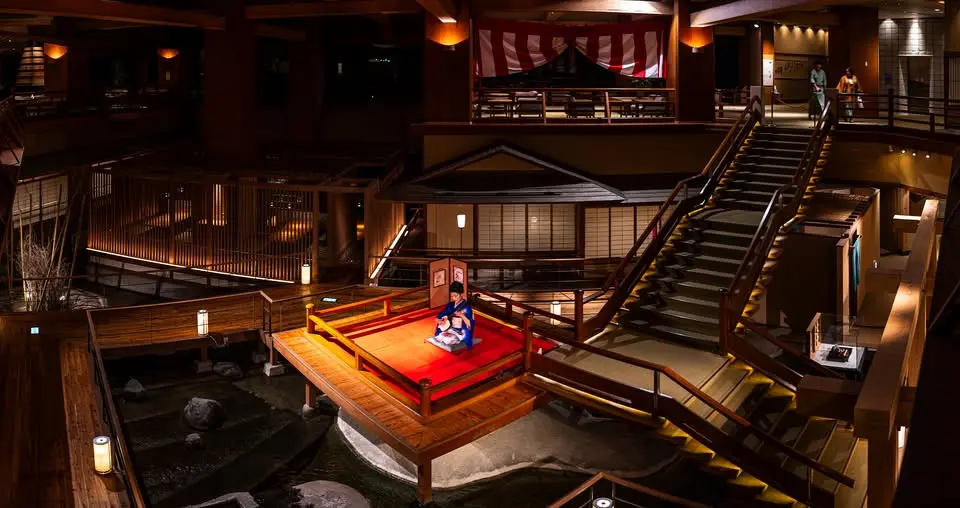
This is the pilgrimage's penultimate destination — and its most dramatic. Everything else on this list is a location you visit, photograph, and leave. Ookawa-so is a location you sleep inside. And the location, for any serious Demon Slayer fan, is the Infinity Castle.
The Infinity Castle — Muzan Kibutsuji's supernatural fortress, a labyrinthine space where geometry is controlled by a biwa-playing demon, where staircases multiply and rooms rearrange themselves and gravity is a suggestion rather than a law — has a real-world architectural double in the lobby atrium of Ookawa-so ryokan in Aizuwakamatsu's Ashinomaki Onsen. The soaring multi-level wooden atrium, with its cascading staircases visible from every floor and a central floating stage suspended over a stream of water, is not approximately similar to the Infinity Castle. It is architecturally the same building — the same proportions, the same logic of vertical space organized around a central performance point, the same quality of interlocking levels that seem to generate more levels as you look at them.
Every afternoon from 4:00 PM to 6:00 PM, a musician performs on the floating stage. The instrument is shamisen — a traditional three-stringed instrument whose sharp, plucking acoustic sound echoes upward through the multi-tiered wooden structure in concentric rings. Nakime, the demon who controls the Infinity Castle's geometry in the series, plays biwa — a different but closely related stringed instrument from the same classical tradition. Standing in the atrium listening to shamisen echo off three stories of wooden gallery is the most accurate auditory recreation of an anime location that exists anywhere in Japan. The sound fills the space the way Nakime's music fills the Castle. You understand why the architecture follows the music. It does here too.
The rest of Ookawa-so is extraordinary on its own terms. The outdoor onsen baths are fed directly from the Ashinomaki spring source — colorless sulfate water producing 1,000 liters per minute from the earth, of which the hotel takes 200. The Shiki Butai Tanada bath, designed in terraced levels like rice paddies, descends toward the Ookawa River gorge with a panoramic view of the valley. Dinner is kaiseki — multi-course seasonal cuisine prepared with river fish, mountain vegetables, and local sake from the Miyasen Brewery's Sharaku label. The morning buffet features tamago kake gohan with Aizu local chicken eggs. The hotel runs a free shuttle from Aizu-Wakamatsu Station, departing at 3:30 PM.
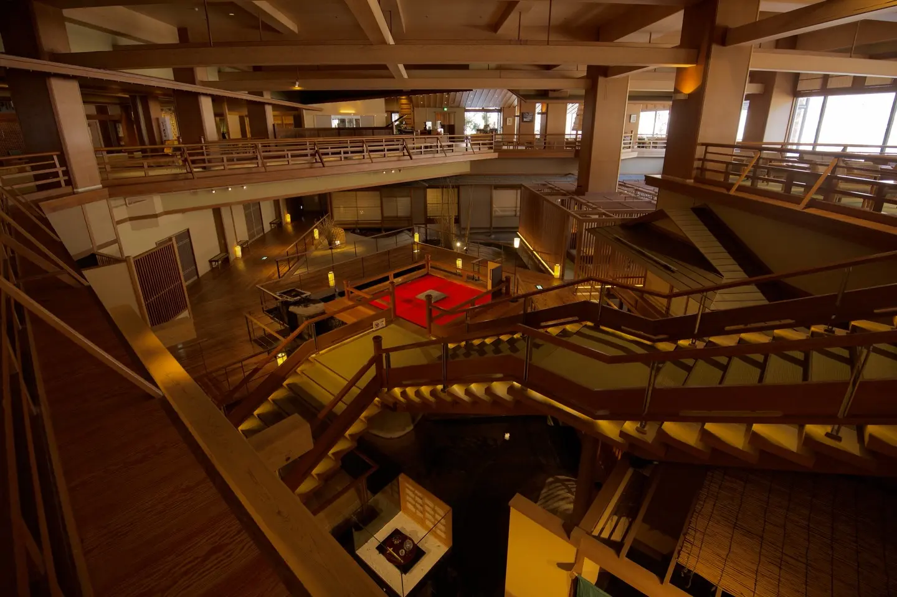
The floating stage at Ookawa-so — shamisen performed daily 4:00–6:00 PM. Arrive before 4:00 to claim your position in the atrium.
Access from Tokyo
Tohoku Shinkansen to Kōriyama (~75 min, ~¥6,500) → JR Ban-Etsu West Line to Aizu-Wakamatsu (~80 min, ¥1,170) → Hotel shuttle (departs 3:30 PM daily, free, advance reservation required).
Address: 984 Shimodaira, Ashinomaki, Oto-machi, Aizuwakamatsu, Fukushima 969-5147. Tel: +81-242-92-2111.
Rate: approximately ¥20,000–¥30,000 per person per night, including dinner and breakfast.
Where to Stay — Aizuwakamatsu
Ookawa-so Ryokan — The only place on earth where you can sleep inside the Infinity Castle. Shamisen performance daily 4:00–6:00 PM. Free shuttle from Aizu-Wakamatsu Station at 3:30 PM — reserve in advance.
Ginzan Onsen: The Hidden Swordsmith Village
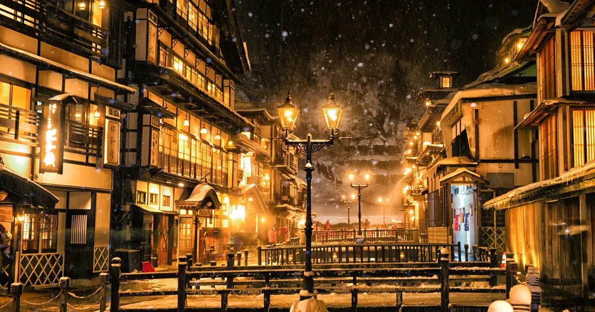
There is a specific kind of Japanese onsen town that only exists in the deep mountains of Tohoku and Yamagata — built during the Taisho period, when timber was abundant and architects were experimenting with multi-story wooden structures, heated by natural springs, positioned along rivers for aesthetics as much as convenience. The buildings are four stories of dark timber and grey roof, gas lamps still burning on the street at dusk, wooden bridges crossing the stream that runs down the center of town. These towns do not look like they belong to the present century. Several of them feel frozen at approximately 1920.
Ginzan Onsen is the finest surviving example. Its official full name — Ginzan, meaning Silver Mountain — comes from the silver mines that operated here during the Edo period. The town was always remote, always economically tied to the mountain rather than the valley, always a place that knew its own isolation. When the mines closed, the hot springs kept it alive. The four-story Taisho-era ryokans lining the river — their grey roofs, warm glowing windows, and gas lamp-lit reflections on the water at night — are the visual template for the Swordsmith Village in Demon Slayer, the secretive mountain town where masked artisans forge Nichirin blades away from demonic observation.
The connection is both architectural and atmospheric. The Swordsmith Village must be isolated, it must feel frozen in time, it must combine the functional seriousness of a craft town with the warmth and hospitality of a hot spring retreat. Ginzan satisfies all three criteria. Paired with the Okuizumo Tatara Museum earlier in this pilgrimage, Ginzan completes the picture: Okuizumo is where the steel is made; Ginzan is where it is forged into blades. The two locations together tell the full story of the Nichirin blade's creation.

Ginzan Onsen in winter — when the snow falls, the resemblance to the Swordsmith Village becomes total
Access
From Tokyo Station: Tohoku Shinkansen to Oishida Station (approximately 2h 30min, ~¥10,000), then the Kosekiya Annex shuttle bus (35 minutes, advance reservation required) or local Hanagasa Bus to Ginzan Onsen (40 minutes). The bus stop is adjacent to the sister hotel Ginzanso.
Where to Stay — Ginzan Onsen
Kosekiya Annex — A historic Taisho Roman-style ryokan at the center of Ginzan Onsen. Rental Taisho-era costumes available on-site. Free access to Ginzanso's larger outdoor baths included for all guests.
Notoya Ryokan — A registered tangible cultural property built in the Taisho era using traditional nail-free joinery, occupying the most prominent riverside position in Ginzan Onsen. Named in Wikipedia's documentation of Spirited Away as a bathhouse inspiration — making it one of the rare properties that serves both the Demon Slayer and Spirited Away pilgrimages simultaneously. Up to 15 rooms, river-facing accommodation available. Book via Notoya's Japanese website or through Japanese Guest Houses (japaneseguesthouses.com) for English-language reservation support.
The Taisho Aesthetic: Why Demon Slayer Feels Like a Real Place
The reason this pilgrimage is possible — the reason it spans twelve locations across ten prefectures and connects a mountain shrine's monks' garments to a fictional haori, a 150-year-old wisteria tree to a demon-repelling mountain, a 1914 steam locomotive to an anime film — is that Demon Slayer is not a fantasy built from imagination. It is a documentary built from the Taisho era.
The Taisho period (1912–1926) was defined by a tension that Koyoharu Gotouge makes the central conflict of the series: ancient folklore and rapid industrialization occupying the same country simultaneously. The charcoal burners on Mt. Kumotori who had been living the same mountain life for centuries; the electric lights blazing in Asakusa as those same burners walked into the city for the first time. The mountain monks in checkered robes performing fire dances at Kamado Shrine; the Class 8620 locomotive pulling its passengers through the night at speeds that would have seemed impossible to their grandparents. This collision — old Japan refusing to yield to new Japan — is what Demon Slayer is about at its deepest level. The demons are the past. The Demon Slayer Corps is the present trying to survive it.
Every location in this guide is a surviving piece of that collision. The pilgrimage is not complete until you have stood at the summit of Mt. Kumotori in winter, walked Nakamise Street at dusk, watched shamisen echo through a wooden atrium in the Fukushima mountains, and understood — in your bones rather than your head — what the Taisho era actually felt like. The fiction is not separate from the place. The place is the fiction. Japan built the Demon Slayer world, and it is still standing, waiting to be walked.